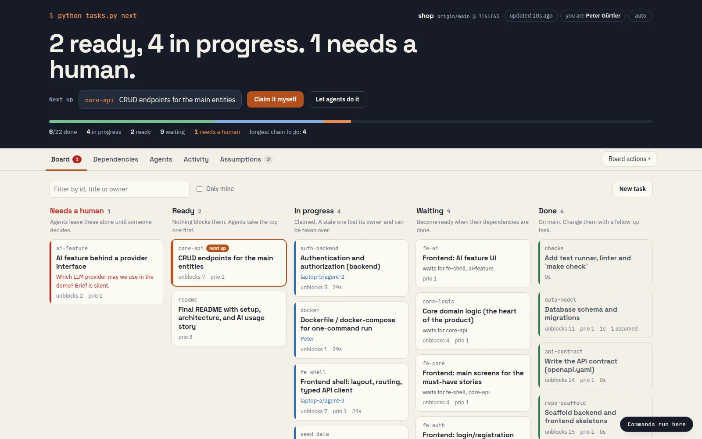

Order #1
Explain what I do to people who don’t cook code
A talk about working with AI
How a team of AI assistants works together, and where people fit in
Peter Max Gürtler
Last night
[42]
jobs finished
0
times I was woken up
[5]
notes waiting for me at breakfast
The problem · 1
A dish in minutes that would take a person a day.
Works through the night, never gets bored.
Starts every shift with no memory of yesterday.
The problem · 2
Double the work, one pot wasted.
Everyone thought someone else had it.
“Done” was said, not checked.
And the chef is asleep.
The good news
Tickets on a rail everyone can see. A head chef who tastes every plate. My version of those rules for AI cooks is called TFP.
Rule 1 · The rail
#1
Tomato sauce
#2
Fresh bread
#3
Pasta for table 4
#4
Tiramisu
Everyone looks at the same rail. If it isn’t on a ticket, it doesn’t exist.
Rule 2 · The order
Tomato sauce
Ready now
Pasta for table 4
Waits for: sauce
Serve table 4
Waits for: pasta
Cooks only take tickets that are ready, and the one that unblocks the most dishes comes first.
Rule 3 · Calling it
Tomato sauce
Taken by
Cook 3
So no two cooks ever make the same dish.
One wins. The other shrugs and takes the next ticket. No arguing.
Rule 4 · Nobody gets lost
1
Cook 2 takes the risotto, and calls out “still on it” every few minutes.
2
Cook 2 goes quiet: crashed, or ran out of time.
3
The ticket returns. The next cook finds the half-made risotto and carries on.
Rule 5 · The pass
The kitchen
Half-done dishes stay back here. Guests never see them.
Pass, or back to the stove
The dining room
Only dishes that passed the test are ever served.
A cook can’t just say “done”. The test decides.
Rule 6 · The chef is asleep
Out of basil, used parsley.
Cook 4
Menu didn’t say spicy or mild. Went mild.
Cook 1
Needs a person
Guest allergic to nuts? I won’t guess.
Cook 6
In the morning the chef reads the notes: keep it, or change it.
Where people fit
Decide what gets made, and what “good” means.
Confirm or overrule the choices cooks made alone.
Step in when a cook is truly stuck.
Pause new tickets while the menu changes.
See it for real

What’s ready, who’s cooking what, what’s served.
Every choice the cooks made alone.
Pause, answer, add a ticket.
For the curious
| In the kitchen | In my work |
|---|---|
| Cook | An AI assistant that can work on its own (an “AI agent”) |
| Ticket on the rail | One small job, written in a shared folder |
| The logbook | A record of every change, so nothing is lost (Git) |
| Name on the ticket | “I’m on it”: only one assistant can take a job |
| Taste test at the pass | An automatic check before work counts as done |
| Note for the chef | A decision the assistant made alone, for a person to review |
Honest limits
That’s why every plate is tasted, and why I read the notes.
The test says the dish is safe to serve, not that the guest will love it.
Writing good tickets is now the hard part, and it’s human work.
Why this matters to you
Cut it up
Can the work be split into small, clear jobs?
Taste it
Is there a way to check each job is really done?
Read the notes
Is a person ready to steer, review and decide?
If you remember one thing
Thank you! Questions?
Peter Max Gürtler